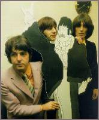
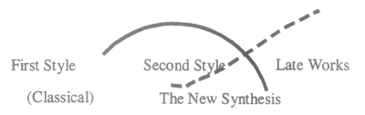
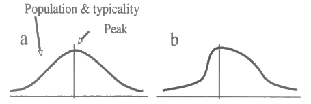

The rise and fall of the experimental style of the Beatles |
|||
| 2. Theoretical foundation | |||
| by Tuomas Eerola | |||
 The history of music and style periods within it are frequently described using the terms rise and fall. Terms like these presuppose other concepts like style, periods and life span, containing complicated and often contradictory notions about human behavior. Gjerdingen has argued "that the apparent rise and fall of musical schemata is due to the way in which human intelligence abstracts stable categories." Building on his model of the "normative life span" of style we will clarify how the relevant key concepts are used in this essay. |
|||
|
|
|||
| 1 | Style and change. According to Leonard B. Meyer (1989: 36), "the foundation on which the understanding, appreciation, and evaluation of works of art must rest, is a sense of style." Styles or style periods are arranged by uniform traits or aspects, that is, style analysis begins with classification of these replicated features (Meyer, 1989: 39; also: Moore, 1993: 171-172; Pascall, 1981; Treitler, 1989: 70, 72; Ratner, 1980: 9; and Serafine, 1983: 122-123). | ||
| The first problem encountered in the analysis of a style is that there is not any set definition for the different traits, features or aspects in different musical styles. Therefore they have to be defined corresponding to the style in question and the analytical needs. At the most elementary level music is divided into five basic components, those of rhythm, texture, melody, harmony and form (Meyer, 1973: 7; LaRue, 1970: 3; Pascall, 1981: 316), which usually either alone or combined in variable ways form stylistic features. These are perceived as meaningful units, taking into account the experience of the listener. In cognitive psychology these units are called schemata and they can range from the abstract to the concrete. | |||
| For example, a changing-note schema, which is perceived as one stylistic feature in a certain musical style, is a combination of a melodic pattern (do-ti ... fa-mi) with harmonic and melodic progression in the bass, which could be defined as stylistic features in their own right in another style. Schemata have been observed to have psychological reality and have also been found useful in perception of music and style analysis. [2] As style analysis focuses on common elements or differences in all the works in that style, [3] these concepts are used here to illuminate the way features are perceived and defined; features can consist of multiple parameters which together create meaningful units. These units will vary here in their level of abstraction and therefore will not be defined precisely as schemata, but as stylistic features. [4] The selected features are based on the musicological literature about the Beatles and on something the songwriters themselves have said and distinguished. This approach ensures that the features are indeed meaningful units. | |||
| As change and novelty have mainly been positive values in art in our Western culture, there has mostly been a stylistic change of some sort. Sometimes the change is articulated as an alternation between a period of stability and a period of revolution — convention versus invention [5] — or it is proposed that it reflects changes in society, caused by differences between the personalities of the artists and by the sheer possibilities inherent in the elements of the artworks themselves. While all the explanations may be relevant, the most basic requirement of art may hold the most important key to the question of style change — originality. To be called art, work must be new and original. | |||
| Berlyne first formulated that the liking for aesthetic stimuli is determined principally by properties such as their novelty, ambiguity, incongruity or complexity (Berlyne, 1960; 1970; 1971). These pressures are required to compensate for habituation and the result is that successive works of art must have more arousal potential to be liked. Naturally there are limits — our information processing capacities, besides technical and material limitations - that keep the works of art from becoming too complex. When reaching that point, current style is exhausted and new style will be introduced. This explanation for style change has been tested and refined in psychological studies of art history, including music — see: reviews in Hargreaves (1986); Martindale (1990); Gaver and Mandler (1987). | |||
| Although the process of style change is mostly continuous, historians attempt to divide history into distinct periods. In examining them, it is possible to concentrate on any hierarchic level, from one composer's singular style period to epochal style periods and even to large style historical periods (cultural level) (Pascall, 1981; Narmour, 1977: 171; Meyer, 1989: 38; Nettl, 1964; Blacking, 1977; Nattiez, 1990). In this sense, the word period, which is preferred here rather than its synonyms phase or stage, applies equally to any level. These periods have general or individual names and often three phases or frames within them. However, while triadic periodization is common, there is disagreement as to detail, i.e., as to when the periods end or begin. | |||
| There is a discrepancy between the way periods are distinguished as rigid, solid blocks and the way organic development is used to describe the gradual change. The periods overlap but it is history that oversimplifies the periodization, undoubtedly aiming for greater clarity. The reasons for style change are comprehended better if the continuity of development is taken into account. As Leo Ratner (1980: xv) observes in explaining change in the classical period: "The change in stylistic emphasis was due to an overlap of two streams of stylistic continuity rather than a sharp change of direction." The problem is how to depict this kind of subtle development. For example, it is customary to divide Beethoven's style periods in the following way, exemplified by Grout's reference book, A History of Western Music (Grout & Palisca, 1988: 628-629): | |||
|
|||
| Michael Broyles (1987) has portrayed the overlapping nature of the style change in a good, explicit way in his study about Beethoven. He divides the periods quite similarly to Grout but illustrates the nature of the periods and the stylistic change in a better way: | |||
 |
|||
| Figure 1: Beethoven's stylistic periods (Broyles, 1987: 5) | |||
| Figure 1 illustrates Beethoven's three style periods. It is apparent how another style is emerging besides the first style and the new style is a synthesis of the first and the second style. Slowly the "classical period" is seen to decline and the last period is known as Beethoven's reflective period. It is also apparent from the figure above that these periods overlap. The first period is shaped like a curve, which literally is the life span of Beethoven's early style. | |||
| The notion that the history of music may be viewed and described in organic terms has been a pervasive one in Western culture. [6] Gjerdingen (1988: 99) argues "that the apparent rise and fall of musical schemata is due to the way in which human intelligence abstracts stable categories." He has established with empirical material the chronological distribution of a stylistic feature. The results are used here as the model for the normative life span of style. | |||
| 2 | Normative life span of style. In his book A Classic Turn of Phrase, Gjerdingen (1988) has introduced a model that depicts concretely the abstract life span of one musical period. His hypothesis was that the "population of a stylistic feature across time approximates a normal, bell-curved statistical distribution" (Gjerdingen, 1988: 100), "the variation depending on how many constraints are specified in the features or schema's definition" (Gjerdingen, 1988: 101). However, the distribution curve is asymmetrically distributed, positively skewed to be precise, which is as he claims, because there is a factor modifying it — memory. Another hypothesis of his was that a schema will exhibit a curve of typicality similar to its population curve (Gjerdingen, 1988: 103), that is, when there is the highest amount of samples, the schema in question will be closest to the most typical instance of its kind (prototype). Gjerdingen presents the normal and the modified normal distribution in a simplified way as seen in Figure 2. | ||
 |
|||
| Figure 2: Normal distribution (a) and normal distribution plus effect of memory (b) (Gjerdingen, 1988: 105) |
|||
| The curve in Figure 2 represents both the population and the typicality of style feature. Curve a is a normal distribution and curve b exhibits the effect of memory on the normal distribution. Curve b is slightly asymmetrical; before the peak there is a faster rise and after the peak a slower decline. Gjerdingen's explanation for asymmetricity is that the task of memory is to conserve. Previous or older, established schemata inhibit the recognition of new ones, until subsequent realization of the new and re-evaluation of earlier examples, with the effect of a sudden increase in the perceived population. After the peak a similar process affects the descending curve; the schemata in question are retained and established so firmly that they are relied on more and thus they inhibit the use of new schemata (Gjerdingen, 1988: 104-105). | |||
| Gjerdingen's explanation for the apparent asymmetricity of the curve needs a brief discussion. The problem with his explanation is that is it overly general. It is not clear what kind of memory is in question and how it really causes the asymmetricity. His model, however, corresponds in many aspects to the dominant model in the study of innovation in economics. The product life-cycle model (see: reviews in: Frenkel & Shefer, 1997) offers an explanation of the asymmetricity: After the peak the innovation "will mainly be focused on new processes rather than on new products" (Bertuglia, Lombardo, and Nijkamp, 1997: 5). Correspondingly, the findings from experimental aesthetics explain how familiarity with the specific musical style, innovation or idea leads to preference for — and increased use of — it but artists also need to augment the arousal potential of their works by increasing the collative properties of them. As this becomes harder across time, it is eventually necessary to introduce new innovations and rules to sustain the optimal level of arousal potential (Berlyne, 1971; Martindale, 1990). | |||
| Gjerdingen tested his hypothesis by surveying a changing-note schema across time. This schema was typical for classicism, or more precisely, for the gallant style. Most occurrences of it were found in the classical era, but some were found before and after that period. When all the samples found from over a hundred year period were arranged in chronological order, they exhibited a population curve predicted in the theory. | |||
| With the typicality and the peak of the population, Gjerdingen observes that the schema is in its most typical, well-known form and also is easiest to recognize; it fulfills the parameters belonging to it in the best possible way. This typicality is an equivalent to the abstract concept of the prototype which is "the central, core instance of a category" (Rosch, 1975: 198). "The more prototypical of a category a member is rated, the more attributes it has in common with the other members of the category" (Rosch & Mervis, 1975: 599-600). In other words, and in relation to a schema, a prototype "is equivalent to an instantiation of a schema with default values for all variables [...] those values which are encountered most often" (Gaver & Mandler, 1987: 271). | |||
| These values create a prototypical occurrence, which functions as a perceptual frame of reference (Rosch & Mervis, 1975). [7] Also, the typical members are faster verified than atypical members (Smith & Medin, 1981) and they are also better recalled as time goes by (Mandler, 1984: 105), although the judgements of similarity and concepts are asymmetric (Tversky, 1977). These ideas will be relevant when bringing the results back to the concrete musical level. Accordingly, the most typical examples of that schema should be found at the peak, which was substantiated well by Gjerdingen's findings (1988: 264). | |||
| Gjerdingen's work depicts the life span of one stylistic feature that contributes to the style, but as such, it also depicts the life span of the gallant style, an epochal style period, because the feature followed was especially typical of that style. The process and the terms outlined above are undoubtedly more familiar in reference to the classification of classical music. Allan Moore, however, mentions the same formula — the organic growth and decline of style and the overlapping nature of the change — in the evolution of popular music. According to him this process just takes place in a shorter time scale than in classical music (Moore, 1993: 60, 164; see also: Hargreaves, 1986: 203, 206-207; and Merriam, 1964: 79, 307). Keeping in mind the earlier assumptions about the three levels of historical periods and the organic nature of style this model portrays, it is appealing to apply Gjerdingen's results to a different kind of stylistic period and to a different range of time. | |||
| Notes | |||
| 2. Meyer (1973: 213-214) uses the term archetypal pattern in addition to — and meaning — schema . Eugene Narmour's (1977: 174) equivalent of the same term is style structure. |
|||
| 3. Corresponds to Narmour's (1977: 174-175) distinction between "external" and "internal" vantage points in style analysis, the former of which is more of an ethnomusicological way of study. The "internal" vantage point is the same as the analysis of style history and it enables the researcher to view the relationships between different periods. |
|||
| 4. This resembles the feature list approach rather than network approach to schema definition. The approach is, however, similar to that Meyer (1989: 44-48) uses when he lists the salient features of Wagner's style. According to him, this method illuminates any style, composer, culture, epoch or hierarchic level (Meyer, 1989: 48). |
|||
| 5. As Thomas Kuhn (1962) proposes that the process of scientific progress is made. |
|||
| 6. See: Solie, 1980: 147; Treitler, 1989: 87, 82-94, 111-112; Donougho, 1987: 322. A similar process is noted to occur in other cultures as well (Kaemmer, 1993: 180). The organic terms are most often encountered in conjunction with descriptive accounts of music histories (see: Allen, 1939: 249-250; Leisiö, 1995: 109; Treitler, 1989; and generally concerning art worlds and styles: Becker, 1982: 310-311). |
|||
| 7. Exemplar versions of the prototype theory reject the idea that abstractions underlie the concepts, and argue that individual entities lie at the heart of our concepts (Nosofsky, 1988: 1991). |
|||
|
|
|||
| 2000 © Soundscapes | |||